Kamisu, Ibaraki: things to do, food and stays
Kamisu · Ibaraki
Kamisu
Highlighted on the Ibaraki map.

Stay
アートホテル鹿島セントラル
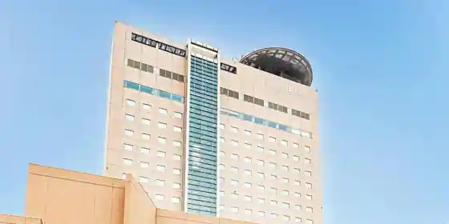
Ato Hotel Kashima Sentoraru
Hotel in Onohara, Kamisu with parking and a sauna.
たびのホテル鹿島
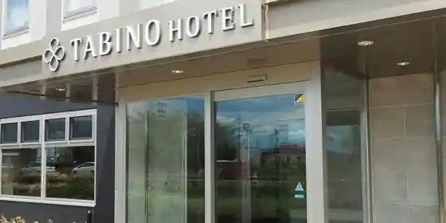
Tabino Hotel Kashima
Hotel at Yakuseki Onsen in Hiraizumihigashi, Kamisu with breakfast available and parking.
ホテルルートイン神栖
Hotel Route Inn Kamisu
Hotel in Chite, Kamisu with parking.
アトンパレスホテル 茶寮砂の栖
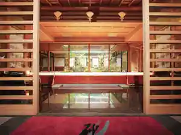
Atonparesu Hotel Charyo Suna No Sei
Hotel in Onohara, Kamisu with open-air baths.
アトンパレスホテル
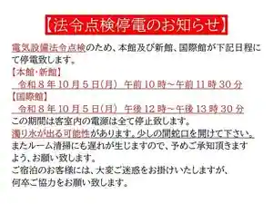
Atonparesu Hotel
Hotel in Onohara, Kamisu with business travelers.
ホテルレイイン鹿島(旧ホテルウィングインターナショナル鹿嶋)
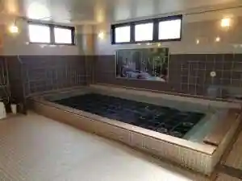
Hotel Rein Kashima (Kyu Hotel Uinguintanashonaru Kashima)
Hotel in Onohara, Kamisu with a large communal bath.
鹿嶋パークホテル
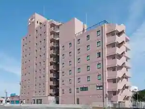
Kashima Park Hotel
Hotel in Onohara, Kamisu with business travelers.
フレックステイイン鹿島セントラル
Furekkusutein Kashima Sentoraru
Inn at Ruheisetsunotennen Onsen in Onohara, Kamisu.
鹿島アイビーホテル
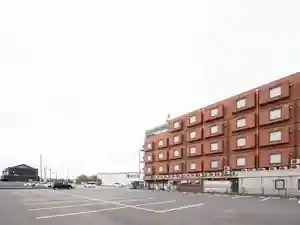
Kashima Aibi Hotel
Hotel in Tsutsui, Kamisu with business travelers and groups.
ＨＯＴＥＬ Ｒ９ Ｔｈｅ Ｙａｒｄ 神栖
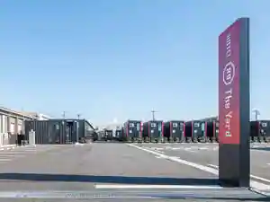
HOTEL R9 The Yard Kamisu
鹿島ポートホテル
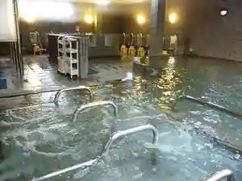
Kashima Poto Hotel
Hotel in Chishuchuo, Kamisu with a sauna.
ファミリーロッジ旅籠屋・神栖店
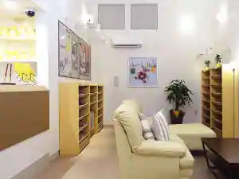
Famiri Lodge Hatago Ya Kamisu
Mountain lodge in Hiraizumi, Kamisu with breakfast available and family-friendly stays.
Dining
茂利戸家
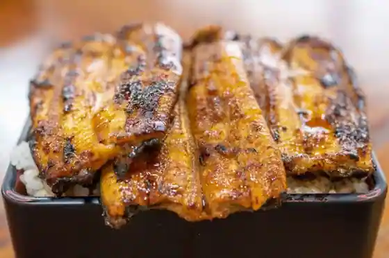
Shigetoshi Ko Ie
北海とんこつ らーめん純輝 神栖店
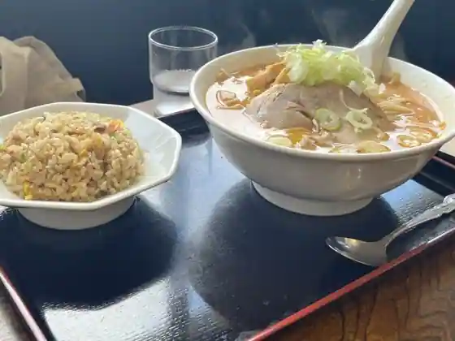
Hokkai Tonkotsu Ramen Jun Teru Kamisu
談話室杉の樹
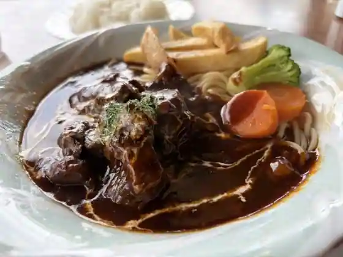
Danwashitsu Sugi No Ki
ラーメンショップ 椿 堀割店
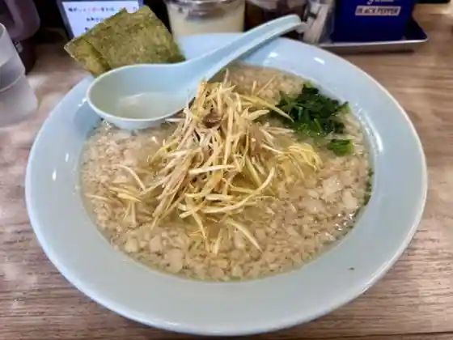
Ramen Shoppu Tsubaki Horiwari
海老の大きい店 そば処 砂場
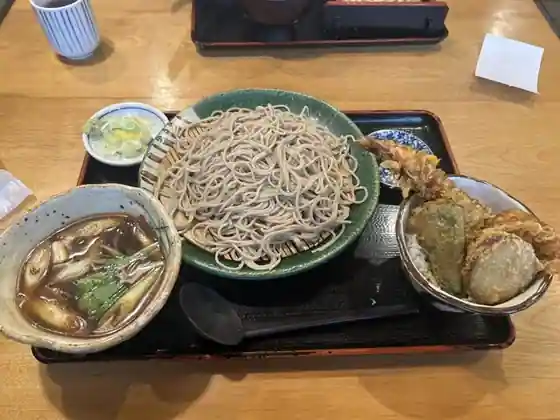
Ebi No Oki Soba Tokoro Sunaba
旬采 新舟
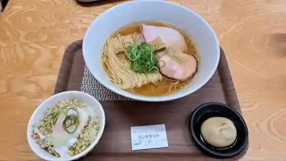
Jun Sai Shin Fune
豚花百万石
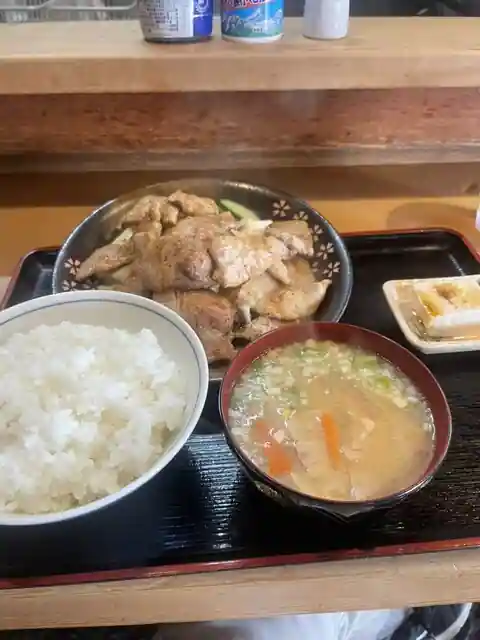
Buta Hana Hyakumangoku
自家製麺 麺屋 虎治
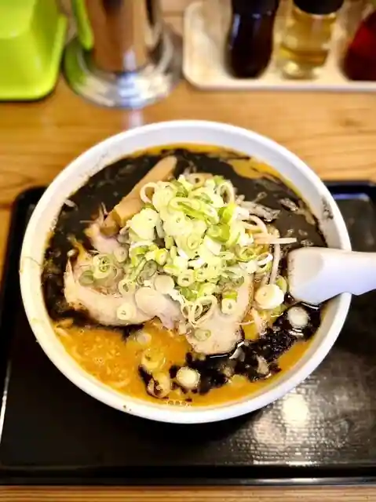
Jikasei Men Men Ya Toraji
ステーキ＆シチュー レストラン ハーバー
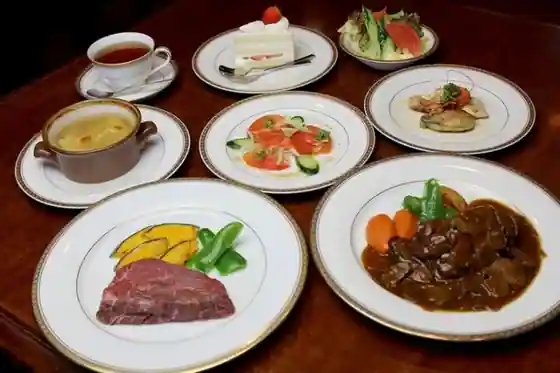
Steak & Shichu Restaurant Haba
文田食堂
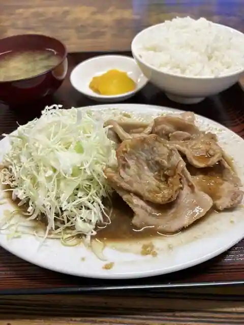
Bun Ta Shokudo
手打ち蕎麦 ほそだ
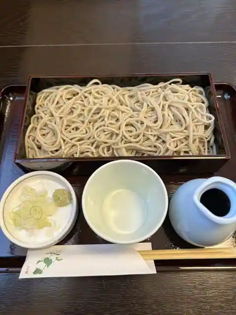
Teuchi Chi Soba Hosoda
華のれん 神栖店
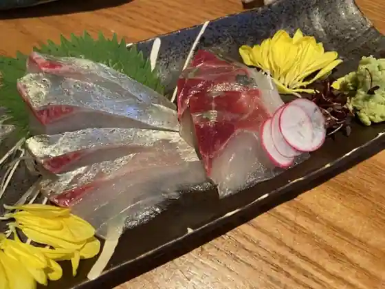
Hana Noren Kamisu
白河手打ち麺 ひかる
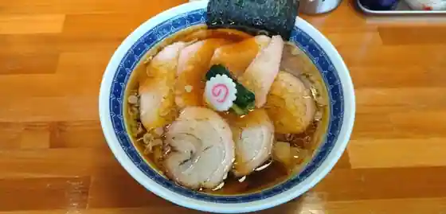
Shirakawa Teuchi Chi Men Hikaru
らーめん 頑固 一徹堂
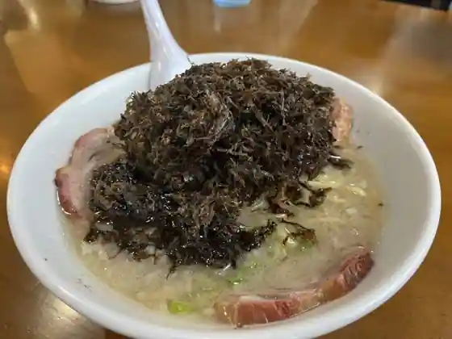
Ramen Ganko Ittetsu Do
石毛屋矢田部店
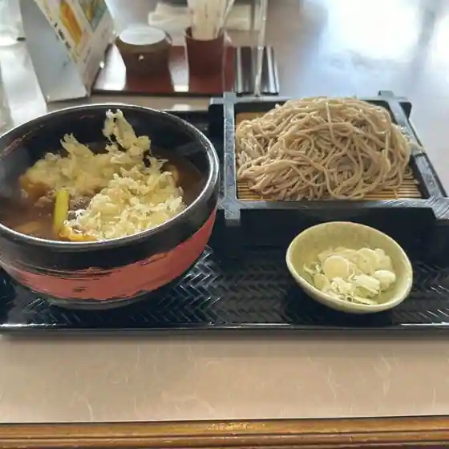
Ishige Ya Yatabe
soba処 丁s
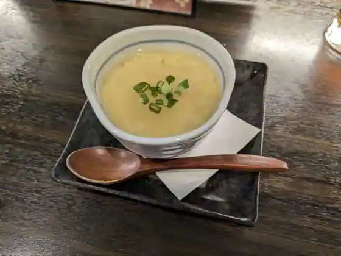
soba Tokoro Cho s
ひだまり食堂
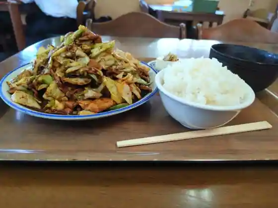
Hidamari Shokudo
信州そば三城
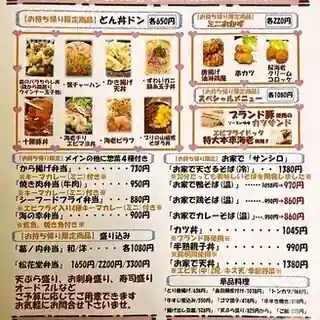
Shinshu Soba Miki
キャンティ
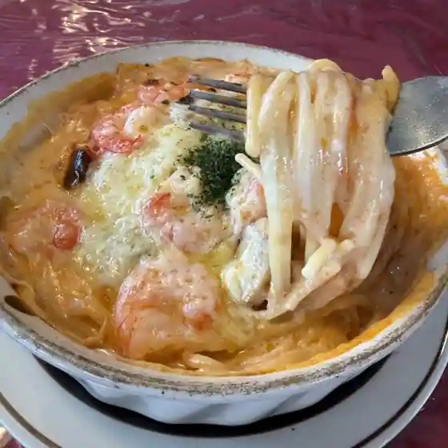
Kyantei
ラーメンショップ 波崎店
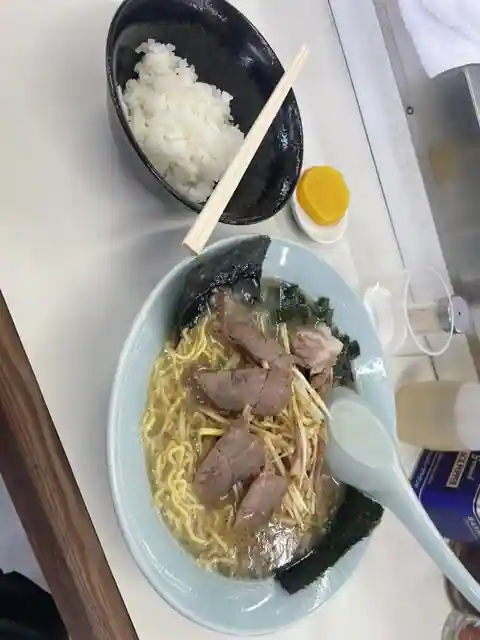
Ramen Shoppu Hasaki
レストランルピナス
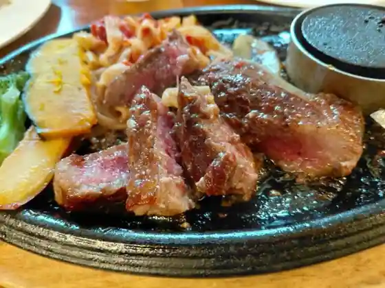
Restaurant Rupinasu
香蘭
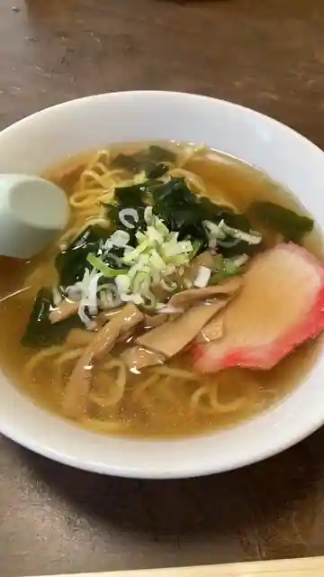
Koran
嵯峨野
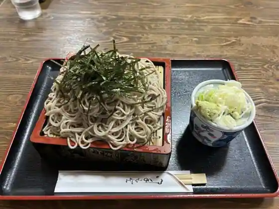
Sagano
但馬山杉澤
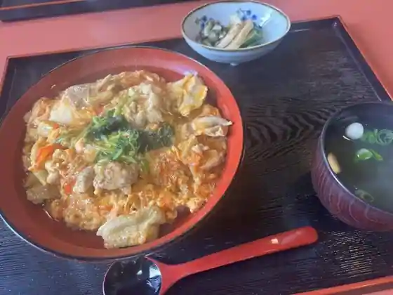
Tajima Yama Sugisawa
Sights
Tennen Onsen Rokko Baths
Hikawa Hama Beach

Hasaki Beach

Ikisu Shrine

Minato Park

1000 Nin Garo
Kamisu Onyoku Shisetsu Yu Po
Sansan Park
Rokuzaemon
Sowa Shoku
Shiisaido Park
Kashima Konai Isshu Kengaku Fune (Yurika Go)
Kao Kashima Kojo
Kamisu Kaihin Sports Park
Hasaki Uindo Farm
Hikawa Hama Otokyanpu
Sutekiin Keyaki
Kami Yuki Ike Ryokuchi
Hitachi Tone Ribasaidosaikuringurodo
Nihonryori Maki
KASHIMA BOLD KITCHEN
Resort In Ao no
JA Shiosai Hasaki Eino Keizai Center
Fureai Center Yu Rakuraku
Minshon Yamazaki
Kami Zen Tera
Chekkuin Kitagawa
Otone So
Uchiwasaboten Gunsei Chi
Supotsu Plaza Ishibashi
Chugokuryori Momo Shika Ro
Supotsupoto Hisashi
Towa Tadokoro
O Yado
Furattosurii sakaeya
Nyu Shika Minami
Teppanyaki Momiji
Puchihausu Atorie
Rupinasu
SONIA COFFEE